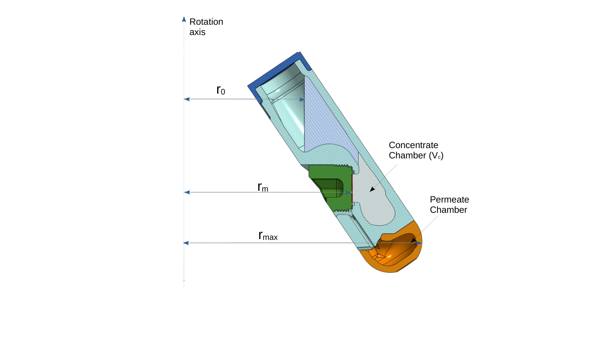

Open concentrate chamber
Internal supports were removed to create a fully open concentrate chamber.
Current public reference configuration for the improved O–CMF–50mL–34deg cartridge.
Single-use orthogonal centrifugal membrane filter cartridge for fixed-angle centrifuge rotors designed around standard high-speed 50 mL round-bottom polycarbonate tubes.
| Nominal feed volume | 13.0 mL |
| Operating fill range | 11–13 mL |
| Concentrate chamber volume | 4.6 mL |
| Effective membrane area | 1.45 cm² |
| Membrane offset, δm | 0.0318 m |
| Free-surface intercept, δs* | 3.71 × 10−3 m |
| Free-surface slope, α | 1.60 × 10−3 m mL−1 |

Cross-sectional reference showing the radial coordinates used in the centrifugal pressure model.
Internal supports were removed to create a fully open concentrate chamber.
The revised cartridge increases concentrate chamber volume to 4.6 mL.
The effective membrane area is increased to 1.45 cm², with sealing provided by a compressed elastomeric O-ring.
For the Beckman Coulter JA-20 fixed-angle rotor, the geometric reference values are rmax = 0.108 m and rm = 0.0762 m.
| Target pressure (bar) | 13 mL | 12 mL | 11 mL |
|---|---|---|---|
| 2 | 3390 rpm | 3470 rpm | 3560 rpm |
| 5 | 5360 rpm | 5490 rpm | 5640 rpm |
| 10 | 7580 rpm | 7770 rpm | 7990 rpm |
| 15 | 9280 rpm | 9510 rpm | 9780 rpm |
| 20 | 10,700 rpm | 11,000 rpm | 11,300 rpm |
| 30 | 13,100 rpm | 13,500 rpm | 13,900 rpm |
| 40 | 15,100 rpm | 15,600 rpm | 16,000 rpm |
| 50 | 16,900 rpm | 17,400 rpm | 17,900 rpm |
| 60 | 18,600 rpm | 19,100 rpm | 19,600 rpm |
Compact JA-20 free-surface correlation: rs(V) = 7.13 − 0.16 V, valid for V ∈ [11, 13] mL.
Research use statement: CentrivaLab products are intended for research and process development use only and are not intended for clinical or diagnostic use.